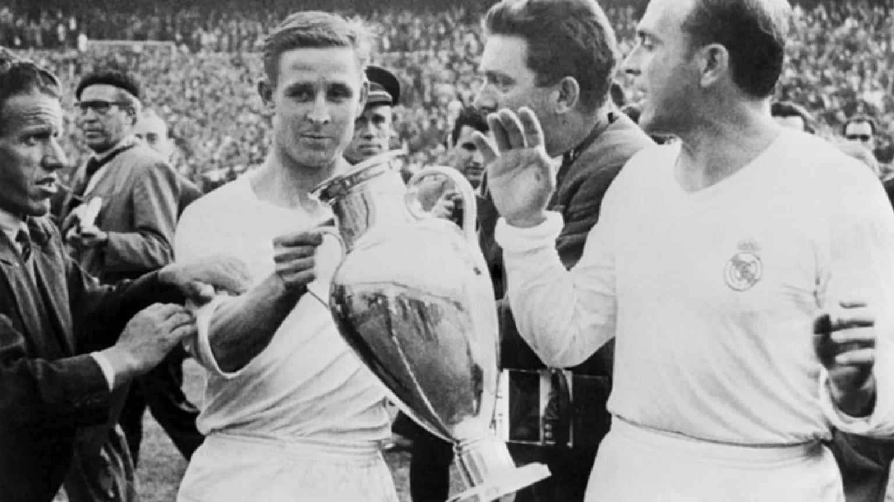
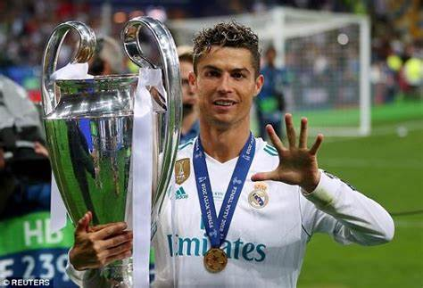
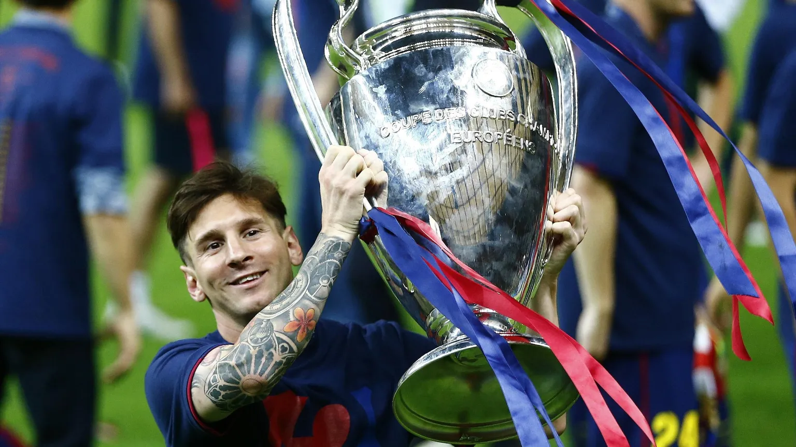
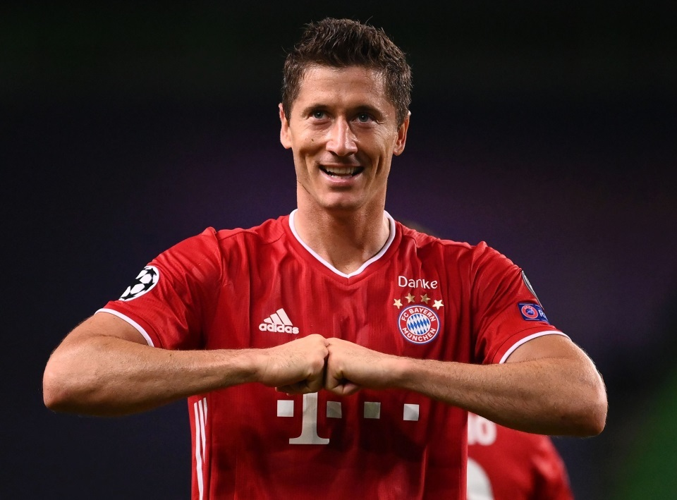
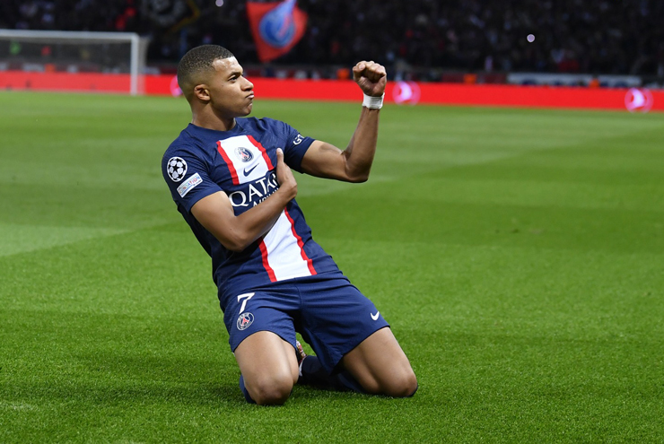

Giới thiệu về Cúp C1
UEFA Champions League (viết tắt là UCL, còn được biết
đến với tên gọi Cúp C1 châu Âu) là một giải đấu bóng đá cấp câu
lạc bộ thường niên được tổ chức bởi
Liên đoàn bóng đá châu Âu
(UEFA) dành cho các câu lạc bộ có thứ hạng cao tại các giải vô địch
quốc gia châu Âu. Đây là một trong những giải đấu bóng đá danh giá
nhất trên thế giới và là giải đấu cấp câu lạc bộ danh giá nhất của
bóng đá châu Âu, bao gồm các nhà vô địch của các giải vô địch quốc gia
(đối với một số quốc gia còn có thêm một hoặc nhiều đội á quân) của
các hiệp hội quốc gia.
Được giới thiệu vào năm 1955 với tên gọi European Champion Clubs' Cup,
giải ban đầu được diễn ra theo thể thức loại trực tiếp và chỉ dành cho
các câu lạc bộ vô địch của mỗi giải vô địch quốc gia. Giải đấu lấy tên
gọi hiện tại vào năm 1992, bổ sung thêm một vòng bảng thi đấu vòng
tròn hai lượt và cho phép nhiều câu lạc bộ từ cùng một quốc gia tham
dự.[1] Giải kể từ đó được mở rộng, và trong khi một số giải vô địch
quốc gia của châu Âu vẫn chỉ có thể cho phép nhà vô địch của họ tham
dự, những giải đấu hàng đầu giờ được phép cử đến bốn đội.[2][3] Các
câu lạc bộ xếp ngay sau ở giải vô địch quốc gia mà không lọt vào
Champions League được phép tham dự giải hạng hai UEFA Europa League,
và kể từ năm 2021, các đội không đủ điều kiện tham dự UEFA Europa
League sẽ lọt vào giải hạng ba mới có tên gọi là UEFA Conference
League.[4]
Lịch Sử Hình Thành Và Phát Triển Của Champion League
Thời kỳ 1955-1992: European Champion Club'Cup
Cúp C1 được thành lập vào năm 1955 với tên gọi European Champion Clubs’
Cup, chỉ dành cho các đội đoạt chức vô địch quốc gia tại giải vô địch
hạng cao nhất của các quốc gia châu Âu là thành viên của UEFA và đội
đương kim vô địch của mùa giải trước – đang giữ cúp.
Giải đấu được thành lập bởi Gabriel Hanot, một nhà báo thể thao người
Pháp. Ông cho rằng cần có một giải đấu cấp châu Âu để các đội bóng hàng
đầu ở châu Âu có thể cạnh tranh với nhau.
Real Madrid là đội bóng đầu tiên giành chức vô địch Cúp C1 vào năm 1956.
Họ cũng là đội bóng thành công nhất tại giải đấu này với 14 lần vô địch.
Trong thời kỳ này, Cúp C1 là giải đấu được tổ chức theo thể thức đấu
loại trực tiếp, bắt đầu từ vòng tứ kết. Các đội thi đấu theo vòng tròn
lượt đi lượt về, chọn ra 2 đội thắng để vào chung kết. Trận chung kết
được tổ chức theo thể thức lượt đi và lượt về.

Thời kỳ 1992-Nay: UEFA Champions League
Từ mùa giải 1992-93, giải đấu được đổi tên thành UEFA Champions League
và mở rộng quy mô, bao gồm các đội đến từ các giải quốc gia xếp hạng cao
ở châu Âu.
Sự mở rộng quy mô của giải đấu đã giúp thu hút thêm nhiều đội bóng mạnh
tham gia, khiến giải đấu trở nên hấp dẫn và cạnh tranh hơn.
Những Cầu Thủ Xuất Sắc Champion League
Cristiano Ronaldo: CR7 là một trong những cầu thủ vĩ đại nhất mọi
thời đại, và anh đã chứng minh điều đó bằng những thành tích xuất sắc ở
đấu trường C1. Ronaldo đã 5 lần vô địch C1, ghi 136 bàn thắng, và được
bầu chọn là cầu thủ xuất sắc nhất trận chung kết C1 năm 2017.

Lionel Messi: Messi cũng là một trong những cầu thủ vĩ đại nhất
mọi thời đại, và anh cũng đã có những thành tích đáng nể ở đấu trường
C1. Messi đã 4 lần vô địch C1, ghi 121 bàn thắng, và được bầu chọn là
cầu thủ xuất sắc nhất trận chung kết C1 năm 2011.

Robert Lewandowski: Lewandowski là một trong những tiền đạo xuất
sắc nhất thế giới hiện nay, và anh đã gây ấn tượng mạnh ở đấu trường C1
trong những năm gần đây. Lewandowski đã 2 lần vô địch C1, ghi 73 bàn
thắng, và được bầu chọn là cầu thủ xuất sắc nhất trận chung kết C1 năm
2020.

Karim Benzema: Benzema là một trong những cầu thủ xuất sắc nhất
thế giới ở thời điểm hiện tại, và anh đã có những màn trình diễn ấn
tượng ở đấu trường C1 trong những năm gần đây. Benzema đã 5 lần vô địch
C1, ghi 86 bàn thắng, và được bầu chọn là cầu thủ xuất sắc nhất trận
chung kết C1 năm 2022.
.jpg)
Kylian Mbappé:Mbappé là một trong những cầu thủ trẻ tài năng nhất
thế giới, và anh đã nhanh chóng trở thành một trong những ngôi sao hàng
đầu ở đấu trường C1. Mbappé đã 1 lần vô địch C1, ghi 42 bàn thắng, và
được bầu chọn là cầu thủ xuất sắc nhất trận chung kết C1 năm 2022.
